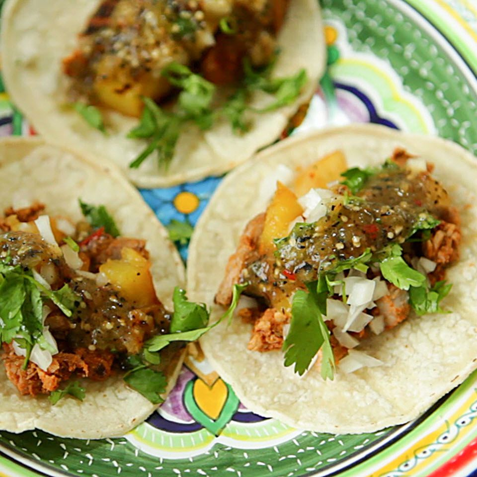

Odin Recipes
-
Tacos de pastor
Los tacos son tortillas con carne, pollo, pescado o vegetales, acompañados de salsa, cebolla, cilantro y limón, populares en México y otros lugares
- Rice with chicken

- Pasta Salad

Los tacos son tortillas con carne, pollo, pescado o vegetales, acompañados de salsa, cebolla, cilantro y limón, populares en México y otros lugares